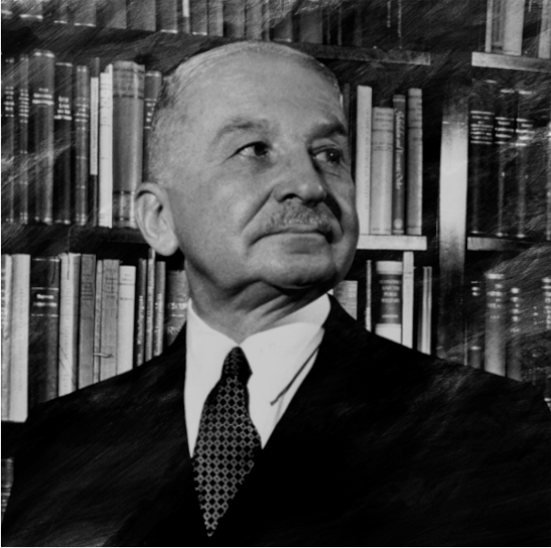
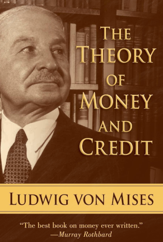
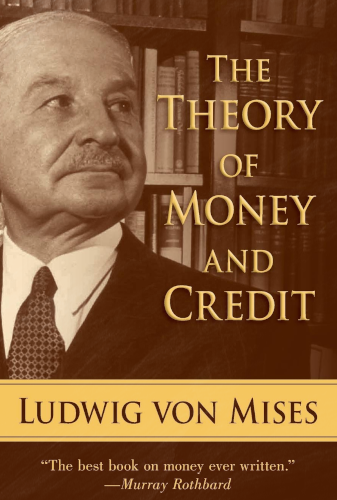

Ludwig Heinrich Edler von Mises
Ludwig Heinrich Edler von Mises (Leópolis, 29 de Setembro de 1881 – Nova Iorque, 10 de Outubro de 1973) foi um economista teórico de nacionalidade austríaca e, posteriormente, americana, que foi membro da Escola Austríaca de pensamento econômico. É conhecido principalmente por seu trabalho no campo da praxeologia, o estudo dedutivo das ações e escolhas humanas.
Defensor da liberdade econômica como suporte básico da liberdade individual, em seu livro Ação Humana expõe as posições epistemológicas e metodológicas que caracterizam a Escola Austríaca: concepção subjetiva de valor, individualismo metodológico e praxeologia. Além disso, Mises dedicou-se à crítica do Socialismo enquanto sistema econômico, por considera-lo inviável em razão de não apresentar mecanismos de fixação de preço pelo mercado (problema do cálculo econômico).
Embora seu trabalho tenha sido amplamente ignorado até meados do século XX, sua obra tem experimentado um certo aumento de popularidade, embora mesmo pensadores ligados ao liberalismo clássico o acusem de ser "um filho do Iluminismo nascido por engano no século XX".
É autor de diversos livros sobre economia, dentre os quais o já citado Ação Humana (1949), A Mentalidade Anticapitalista (1956) e As Seis lições (1979).
Principais Obras
 
